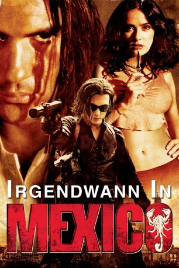

#8493 Irgendwann in Mexico
Alternativ: Once Upon a Time in Mexico
 
 IMDB-Wertung: 6.4 / 10
IMDB-Wertung: 6.4 / 10  Metascore: 0
Metascore: 0 
Drogenbaron Barillo träumt vom finalen Coup: In einem Staatsstreich möchte er die mexikanische Regierung stürzen und der nächste Präsident werden. Der korrupte CIA-Agent Sands hat etwas dagegen und schließt sich mit dem Profikiller und Barillo-Intimfeind Mariachi zusammen. Vor dem Hintergrund diverser revolutionärer Wirren und überschattet von diversen Geheimdienstintrigen nutzt der Mariachi die Gunst der Stunde zum fulminanten Rachefeldzug.
Jahr: 2003
Dauer: 101 Minuten
FSK: 18
Land: USA Studio: Columbia PicturesTonspuren: DTS - ,
Untertitel:
Auflösung: 1080p (1920x1080) Größe: 8847 MB
Genre: Action, Thriller
Regisseur:  Robert Rodriguez
Robert Rodriguez
Drehbuch: Robert Rodriguez
Soundtrack: Robert Rodriguez
Darsteller:
Datei: X:\FSK18-Collections\Mariachi\Irgendwann in Mexico (2003, FSK18, 1920x1080).mkv seit 08.03.2018
Festplatte: FSK18
 Alle Filme aus Gruppe 'FSK18-Collections\Mariachi'
Alle Filme aus Gruppe 'FSK18-Collections\Mariachi'